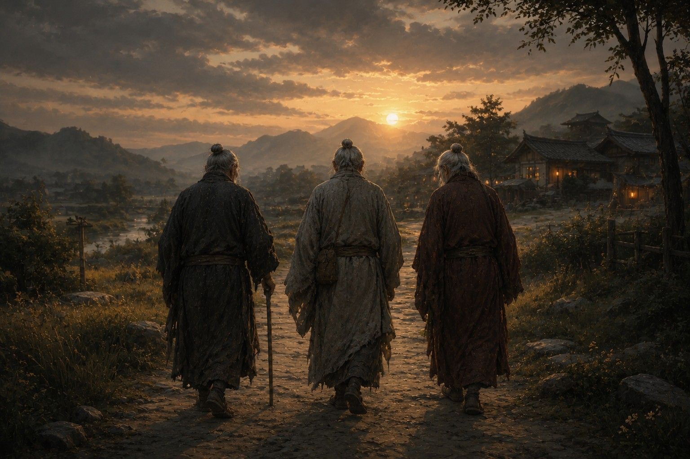

Последняя осень Империи

В молодости человеку кажется, что большие государства умирают так же, как люди: в один день, с громким криком, под звон мечей, грохот барабанов и плач толпы. Только состарившись, я понял, что государства умирают иначе. Сначала исчезает уверенность, потом привычка подчиняться, потом уважение, потом память. Очередь знамен и печатей приходит в самом конце.
К тому времени Тан уже не было, хотя многие еще произносили это имя. Новые правители сменяли друг друга быстрее, чем придворные живописцы успевали закончить их портреты. Провинции жили собственной жизнью. Города платили подати одним, а подчинялись другим. По дорогам шли солдаты, которые не могли объяснить, за кого воюют. Хуже всего было то, что люди понемногу привыкли к хаосу.
Я состарился вместе со своей эпохой. Слух еще служил мне верно, но временами я ловил себя на том, что прошу повторить сказанное, и каждый такой случай причинял боль сильнее любой болезни. Когда всю жизнь твоим главным оружием был слух, потеря даже малой его доли ощущается как предательство собственного тела. Я все чаще оставался дома, все реже принимал поручения и все больше времени проводил среди старых пластинок. Иногда мне казалось, что я пережил все расследования, какие возможны. А иногда казалось, что главное из них так и осталось незавершенным.
Однажды вечером мне принесли посылку, простую деревянную пластину без печатей и сопроводительных бумаг. Я провел пальцами по резным знакам и замер. Некоторые вещи память хранит лучше любых архивов, и руку Цзяня я узнал бы и через сто лет. На пластине было вырезано всего два слова: «Приезжай домой». Я перечитал их несколько раз и долго сидел молча. Домом я уже много лет не называл никакого места. После гибели старой Империи все дороги как будто потеряли прежние названия. Но раз Цзянь выбрал именно это слово, значит, говорил он не о городе и не о деревне.
Наутро я отправился в путь. Дорога заняла почти месяц. Я ехал через земли, которые когда-то были одной страной, а теперь жили каждая по своим законам. В одной области ходила другая монета, в другой носили другие цвета, в третьей чиновники называли себя слугами новой династии. Люди при этом оставались прежними. На рынках спорили торговцы, в домах плакали дети, старики жаловались на погоду, женщины стирали у воды. Кто-то пел старые песни, кто-то складывал новые. Чем дальше я ехал, тем яснее понимал, что государство и страна совсем не одно и то же.
Когда я добрался до места, меня встретил Ло. Я понял это раньше, чем он подошел. Человек может сменить голос, походку, привычки и одежду и все равно остаться собой. Ло постарел, ступал тяжелее и, кажется, прихрамывал, но воздух вокруг него был тот же, что двадцать лет назад. Подойдя, он первым делом принялся ругаться: я слишком исхудал, слишком долго ехал, слишком мало отдыхал, слишком упрямо отказывался от охраны и вообще давно превратился в старого дурака. Я слушал его и смеялся, потому что Ло ничуть не изменился.
Потом появился Цзянь. За годы разлуки я почти забыл, как тихо он ходит. Он вложил мне в руку пластину, и на ней было вырезано: «Ты постарел». Я засмеялся еще громче. Ло немедленно потребовал показать ему надпись, прочел ее и захохотал тоже. Так закончились двадцать лет разлуки. Обошлось без слез, торжественных речей и стариковских поклонов. Смеялись три человека, которые слишком долго не позволяли себе просто жить.
Следующие три дня мы почти не спали. Ло рассказывал о северных гарнизонах, где половина солдат успевала сменить хозяина раньше, чем изнашивала сапоги. Я вспоминал старые расследования. Цзянь писал на дощечках такие язвительные замечания, что Ло, читая их вслух, несколько раз едва не подавился вином. На второй день хозяин дома пришел жаловаться, что от нашего хохота дрожат стены. На третий он принес еще вина и попросил продолжать.
Только на четвертый день мы признали, что старость все-таки сильнее радости. Голова болела у всех троих, даже у Цзяня, который письменно уверял, будто пил меньше остальных. Ло прочел это заявление, посмотрел, по его собственным словам, на пустые кувшины и назвал Цзяня лжецом с почерком архивиста.
Лишь после этого мы заговорили о том, ради чего собрались. Вернее, почти не заговорили, а просто отправились в путь. Идти было недолго, и я узнал место раньше, чем остановились мои спутники. Это была северная площадка, та самая, где когда-то открылась наша последняя большая тайна. За прошедшие годы она почти исчезла. Камни ушли в землю, тропы заросли травой, деревья шумели выше, чем прежде. Но память этого места никуда не делась.
Мы долго стояли молча. Потом я положил ладонь на знакомый камень и нашел на нем знак трех дорог, за которым мы шли почти всю жизнь: одна черта внизу и три, расходящиеся от нее. Некоторое время никто не двигался. Затем я услышал, как Ло берет что-то у Цзяня. Он вложил это мне в руки. Это была деревянная пластинка, очень старая, из самых первых, что появились у нас еще в молодости. На ней был вырезан тот же знак. Ло взял мои пальцы, молча перевернул пластинку вверх ногами и снова положил пальцы на дерево.
Теперь три черты сходились в одну.
Никто ничего не сказал, потому что говорить было нечего. Знак всю жизнь был у нас перед глазами и под пальцами, и только держали мы его так, как нас научили. Ответ ждал здесь много лет. Для Тан мы пришли к нему слишком поздно, а для самих себя как раз вовремя.
Потом мы сидели до самого вечера. Ветер шелестел травой, кричали птицы, вдали шумела вода. Мы вспоминали людей, которых давно потеряли из виду: господина Мина, незнакомца, слепого архивиста из Ляньчжоу, сверщика из старой тюрьмы, настоятеля и его мальчика, девушку на городской стене. Мы вспоминали бумажного ворона и поющий колокол, красные рукава и молчащий театр, мертвые каналы и дом без сна, потерянные имена и тысячу порезов. Все эти дороги когда-то казались отдельными, а теперь сложились в один узор.
Тогда я понял то, чего не понимал всю жизнь. Разделение держалось вовсе не на природе людей. Оно держалось на страхе перед прошлым и перед будущим, на страхе заново пережить бедствие и довериться другому человеку. А соединение не требует, чтобы люди стали одинаковыми. Оно начинается, когда они учатся жить вместе и остаются при этом разными.
Солнце, как сказал Ло, уже клонилось к закату, когда мы наконец поднялись. Воздух стал прохладнее. Пора было возвращаться. Я оперся на трость, повернулся к Ло, чтобы он видел мои губы, улыбнулся и сказал:
— Пойдем домой, друг.
Некоторое время Ло молчал. Потом ответил:
— Не друг. Брат.
Я услышал, как рядом тихо выдохнул Цзянь, человек, который не мог произнести ни слова и всю жизнь говорил с миром через дерево, бумагу и память. Теперь ему ничего не нужно было вырезать. Впервые за всю нашу историю мы трое понимали друг друга без слов.
Мы пошли по дороге, три старика, в сторону дома. За нашими спинами ветер шевелил траву вокруг древнего камня. И мне вдруг показалось, что где-то очень далеко маленькая пташка допела последний куплет своей песни.